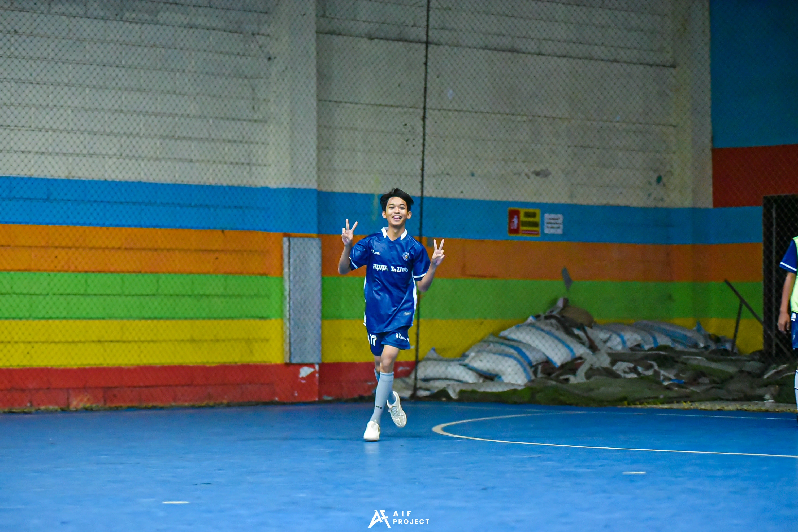
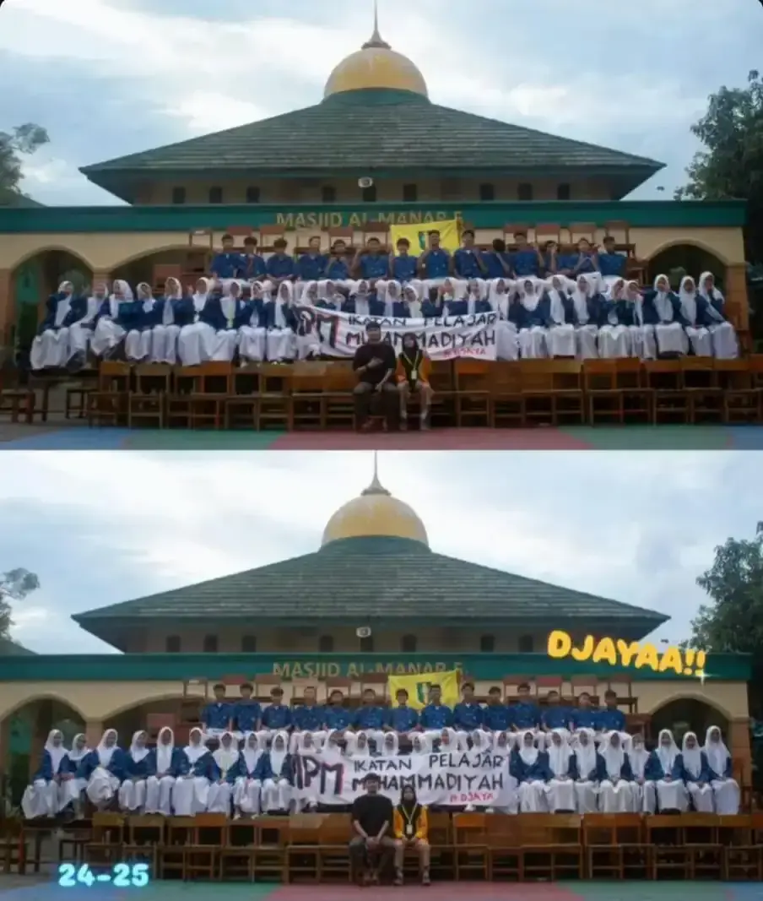
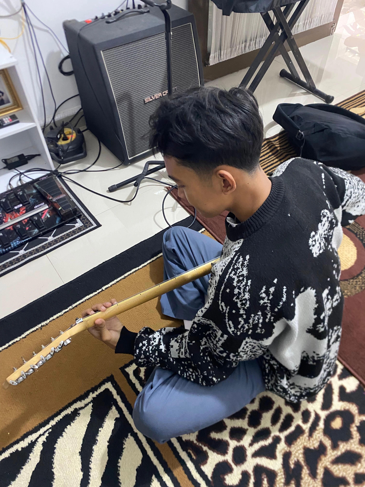
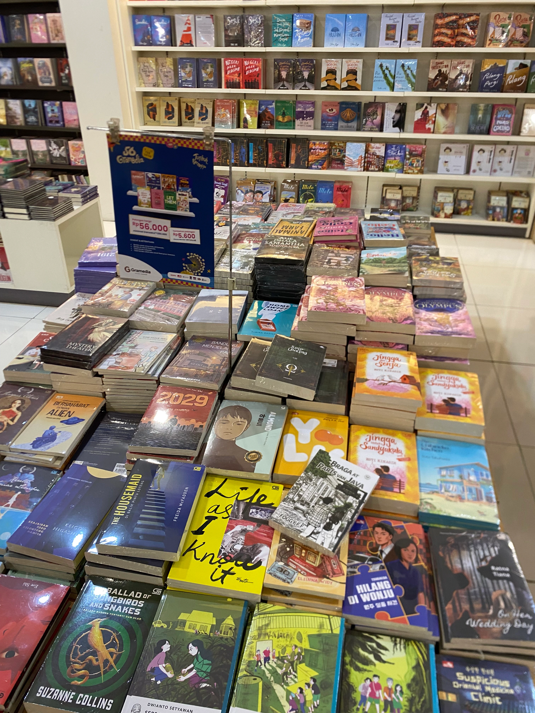
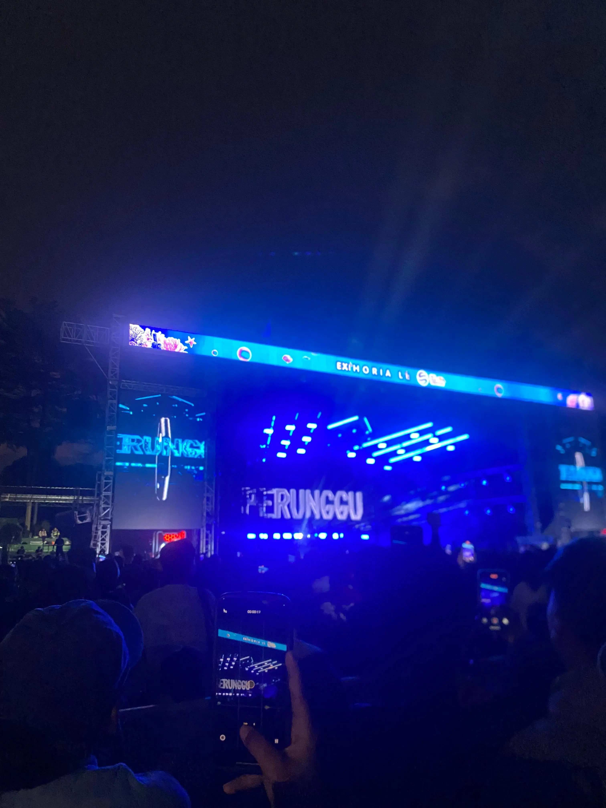

Haii teman teman,perkenalkan nama saya raynaldi ,ini adalah web pertama saya,jadi saya mulai mengasah kemampuan saya dalam bidang IT,yang mana kemampuan saya ini akan berguna di jurusan kuliah yang saya pilih nanti.Meskipun hasil nya tidak terlalu bagus,tapi saya yakin kemampuan saya dapat di asah,dan dapat berguna bagi semua orang.
Lihat tentang saya
Perkenalkan nama saya raynaldi tri aprilino,saya lahir di bandung.Hobi saya ada banyak,karena saya suka mencoba hal baru, tetapi jika secara mendalam hobi saya bermain gitar,membaca buku,dan bermain game.Cita-cita saya menjadi seorang teknik informatika.itulah alasan saya belajar secara mendalam tentang coding,dan ini web pertama yang saya buat,meskipun belum terlalu paham mendalam,tetapi saya yakin dapat berkembang,dan saya ingin menyalurkan kemampuan yang saya pelajari ini,dapat berguna bagi orang lain.Saya juga suka bermain futsal futsal,meski tidak terlalu jago,tapi saya menikmati pada saat bermain futsal.

IPM adalah sebuah organisasi siswa intrasekolah dalam ruang ringkup muhammadiyah,saya mengikuti organisasi ini pada waktu SMP.Dan saya sangat menikmati pada saat berorganisasi,jadi saya yang sekarang berniat untuk ikut ingin mengikuti organisasi lagi.

saya sangat suka bermain gitar.Awal saya bermain gitar waktu saya kecil,dan lebih sering bermain pada waktu SMP,meskipun tidak terlalu jago.Tapi Saya menikmat pada saat bermain gitar.

Awal saya suka membaca buku,pada saat masa-masa awal masuk SMA mungkin karena faktor,dari lingkungan di SMA,saya menjadi suka membaca.

Saya sangat menyukai musik,terumata music-musik bergenre indie rock,seperti perunggu.saya sangat senang ketika mengikuti konser,pengalaman terbaik menurut saya yaitu,konser mendengarkan lagu favorit.
PLAYLIST